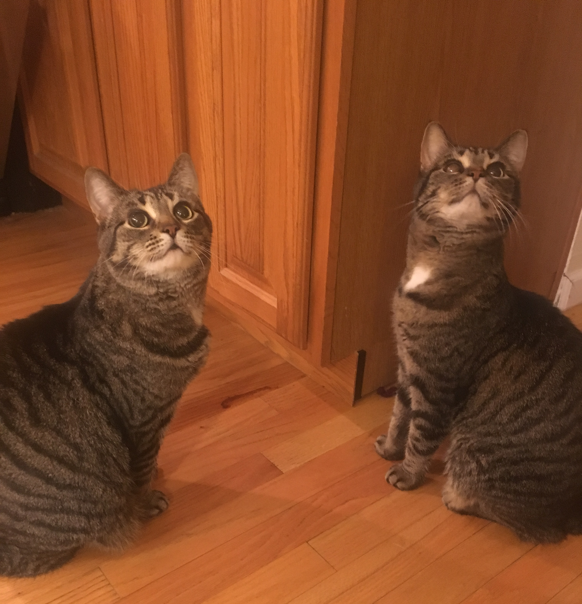

![]()

This post has been slightly modified from its original form on woodpeckR.
Problem
What do I do when %>% doesn’t work?
Context
I love the %>% pipe. Originally from magrittr, it’s now characteristic of most tidyverse code. Using %>% has revolutionized how I write code in R. But sometimes the basic pipe falls short.
table() is one of my favorite functions for exploring data in R: it creates a frequency table of values in a vector. I use table() to do sanity checks on my data, make sure that all factor levels are present, and generally get a sense of how my observations are distributed.
A while back, though, I noticed that table() didn’t play nice with the %>% pipe.
I’ve collected some data on my friends’ pets. Here it is (using pseudonyms, in case anyone has a secret pet they don’t want the world to know about…).

# Load magrittr
library(magrittr)
library(dplyr)
Attaching package: 'dplyr'The following objects are masked from 'package:stats':
filter, lagThe following objects are masked from 'package:base':
intersect, setdiff, setequal, union# Create data
pets <- data.frame(
friend = c("Mark", "Mark", "Kyle", "Kyle", "Miranda", "Kayla",
"Kayla", "Kayla", "Adriana", "Adriana", "Alex", "Randy", "Nancy"),
pet = c("cat", "cat", "cat", "cat", "cat", "dog", "cat", "lizard",
"cat", "cat", "dog", "dog", "woodpecker"),
main_pet_color = c("brown", "brown", "multi", "multi", "brown",
"brown", "brown", "orange", "black", "white",
"multi", "white", "multi"))
# Look at the data
pets friend pet main_pet_color
1 Mark cat brown
2 Mark cat brown
3 Kyle cat multi
4 Kyle cat multi
5 Miranda cat brown
6 Kayla dog brown
7 Kayla cat brown
8 Kayla lizard orange
9 Adriana cat black
10 Adriana cat white
11 Alex dog multi
12 Randy dog white
13 Nancy woodpecker multiUnsurprisingly, it looks like there are a lot of cats and dogs! There are also a lot of brown pets and a lot of multicolored ones. Let’s say I want to see a frequency table of the pet colors. I know that I can do this with table(), like so:
# Make a frequency table of pet colors
table(pets$main_pet_color)
black brown multi orange white
1 5 4 1 2 But if I want to use tidy syntax, I might try to do it this way instead:
pets %>%
table(main_pet_color)Error: object 'main_pet_color' not foundWhat’s up with this? The syntax should work. pet is definitely a valid variable name in the data frame pets, and if I had used a different function, like arrange(), I would have had no problems:
# Arrange the data frame by pet color
pets %>% arrange(main_pet_color) # works fine! friend pet main_pet_color
1 Adriana cat black
2 Mark cat brown
3 Mark cat brown
4 Miranda cat brown
5 Kayla dog brown
6 Kayla cat brown
7 Kyle cat multi
8 Kyle cat multi
9 Alex dog multi
10 Nancy woodpecker multi
11 Kayla lizard orange
12 Adriana cat white
13 Randy dog whiteSo why doesn’t this work with table()?? This problem has driven me crazy on several occasions. I always ended up reverting back to the table(pets$main_pet_color) syntax, but I was not happy about it.
Turns out, there’s a simple fix.
Solution
Introducing… a new pipe! %$% is called the “exposition pipe,” according to the magrittr package documentation, and it’s basically the tidy version of the with() function, which I wrote about previously.
If we simply swap out %>% for %$% in our failed code above, it works!
# Make a frequency table of pet colors
pets %$% table(main_pet_color)main_pet_color
black brown multi orange white
1 5 4 1 2 Important note: Make sure you have magrittr loaded if you want to use this pipe. dplyr includes the basic %>%, but not the other magrittr pipes.
Why it works
The traditional pipe, %>%, works by passing a data frame or tibble into the next function. But that only works if the function you’re piping to is set up to take a data frame/tibble as an argument!
Functions in the tidyverse, like arrange(), are set up to take this kind of argument, so that piping works seamlessly. But many base R functions take vectors as inputs instead.
That’s the case with table(). When we write table(pets$main_pet_color), the argument pets$main_pet_color is a vector:
# This returns a vector
pets$main_pet_color [1] "brown" "brown" "multi" "multi" "brown" "brown" "brown" "orange"
[9] "black" "white" "multi" "white" "multi" When we try to pass pets into table() with the pipe, table() expects a vector but gets a data frame instead, and it throws an error.
The %$% pipe “exposes” the column names of the data frame to the function you’re piping to, allowing that function to make sense of the data frame that is passed to it.
Outcome
The exposition pipe is great for integrating non-tidyverse functions into a tidy workflow. The outcome for me is that I can finally make frequency tables to my heart’s content, without “code switching” back from tidy to base R syntax. Of course, the downside is that you do have to install magrittr, which is sometimes an extra dependency that I don’t want to deal with. But it’s nice to have the option!

Resources
magrittr has a couple other pipes, too: %T% and %<>%. The package also has some nice aliases for basic arithmetic functions that allow them to be incorporated into a chain of pipes. To read more about these magrittr options, scroll to the bottom of the magrittr vignette.
Note: The image at the top of this post was modified from the magrittr documentation.
Citation
BibTeX citation:
@online{gahm2020,
author = {Gahm, Kaija},
title = {\%\$\%: Upping Your Pipe Game},
date = {2020-02-10},
url = {https://kaijagahm.github.io/posts/2020-02-10-upping-your-pipe-game},
langid = {en}
}
For attribution, please cite this work as:
Gahm, Kaija. 2020. “%$%: Upping Your Pipe Game.” February
10, 2020. https://kaijagahm.github.io/posts/2020-02-10-upping-your-pipe-game.